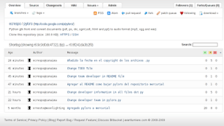
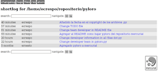

Control de Versiones con mercurial
Posted on mié 08 abril 2009 in Linux,Desarrollo • 6 min read
Mercurial es un sistema de control de versiones distribuido similar a git o bazaar. Es una mezcla de la facilidad de subversion con la potencia de git.
Para instalar mercurial en Debian se ejecuta un aptitude:
aptitude install mercurial mercurial-common
Para ver las opciones que tiene el comando hg se ejecuta hg sólo y muestra lo siguiente:
ecrespo@canaima:~/repositorio$ hg
Mercurial Distributed SCM
basic commands:
add add the specified files on the next commit
annotate show changeset information per file line
clone make a copy of an existing repository
commit commit the specified files or all outstanding changes
diff diff repository (or selected files)
export dump the header and diffs for one or more changesets
imerge interactive merge
init create a new repository in the given directory
inserve start an inotify server for this repository
log show revision history of entire repository or files
merge merge working directory with another revision
parents show the parents of the working dir or revision
pull pull changes from the specified source
push push changes to the specified destination
qdiff diff of the current patch and subsequent modifications
qimport import a patch
qinit init a new queue repository
qpop pop the current patch off the stack
qpush push the next patch onto the stack
qrefresh update the current patch
remove remove the specified files on the next commit
serve export the repository via HTTP
status show changed files in the working directory
strip strip a revision and all later revs on the same branch
update update working directory
view start interactive history viewer
use "hg help" for the full list of commands or "hg -v" for details
Para clonar un repositorio por ejemplo el de bitbucket.org de pyloro se jecuta:
hg clone http://bitbucket.org/ecrespo/pyloro/
destination directory: pyloro
requesting all changes
adding changesets
adding manifests
adding file changes
added 3 changesets with 26 changes to 20 files
updating working directory
20 files updated, 0 files merged, 0 files removed, 0 files unresolved
Este comando hace una copia completa de otro repositorio.
Al ejecutar ls se muestra lo siguiente:
ecrespo@canaima:~/repositorio$ ls -la
python-loro
Dentro del directorio python-loro se tiene lo siguiente:
ConfigurepyLoro.py Festival.py MANIFEST pyloro.desktop pyloro.py setup.py Convert.py .hg PKG-INFO pyloro.glade README TODO audio COPYING images pyloro.conf pyloro.png Reproducir.py verifyconfig.py
Note que existe un directorio .hg, dentro de el se encuentra lo siguiente: 00changelog.i branch branch.cache dirstate hgrc requires store undo.branch undo.dirstate
Editar el archivo hgrc y agregar la información del usuario, nombre y correo:
[paths]
default = http://bitbucket.org/ecrespo/pyloro/
[ui]
username = Ernesto Nadir Crespo Avila
El primero es la ruta de donde se bajo el repositorio, el segundo es la definición del usuario.
Para ver el log del control de versiones se ejecuta hg log dentro del directorio:
ecrespo@canaima:~/repositorio/python-loro$ hg log
changeset: 0:8f241da3b2f9
tag: tip
user: ernesto@moonlighting
date: Wed Nov 05 23:32:58 2008 -0430
summary: Agregado pyloro a mercurial
Para una descripción más detallada de log se ejecuta hg -v log
ecrespo@canaima:~/repositorio/pyloro$ hg -v log
changeset: 2:6d1d0bf8236c
tag: tip
user: ecrespo@canaima
date: Wed Apr 08 19:28:08 2009 -0430
files: ConfigurepyLoro.py Convert.py Festival.py Reproducir.py verifyconfig.py
description:
Change developer information in all files dot py
changeset: 1:33662d0db317
user: ecrespo@canaima
date: Wed Apr 08 18:15:04 2009 -0430
files: pyloro.py
description:
Change developer team in pyloro.py
changeset: 0:8f241da3b2f9
user: ernesto@moonlighting
date: Wed Nov 05 23:32:58 2008 -0430
files: COPYING ConfigurepyLoro.py Convert.py Festival.py MANIFEST PKG-INFO README Reproducir.py TODO audio/iniciando.ogg audio/terminando.ogg images/loro.png images/loro_icono.png pyloro.conf pyloro.desktop pyloro.glade pyloro.png pyloro.py setup.py verifyconfig.py
description:
Agregado pyloro a mercurial
Cada changeset es un conjunto de cambios agrupados como una unidad lógica, un tag es una marca o nombre arbitrario para un changeset, un tip es el último cambio que se realizó al repositorio, reflejado en los logs.
Para hacer modificaciones el repositorio se hará una copia del repositorio para modificarlo:
hg clone pyloro pyloro-prueba
updating working directory
20 files updated, 0 files merged, 0 files removed, 0 files unresolved
Se edita el archivo readme y se hace el commit:
hg commit
Change TODO file
HG: Enter commit message. Lines beginning with 'HG:' are removed.
HG: --
HG: user: ecrespo@gmail.com
HG: branch 'default'
HG: changed TODO
Al ejecutar hg status se nota que sólo ha cambiado el archivo README:
changeset: 5:0ede87ad831c
tag: tip
user: ecrespo@canaima
date: Thu Apr 09 15:17:50 2009 -0430
summary: Change TODO file
changeset: 4:02e20db62aa8
user: ecrespo@canaima
date: Thu Apr 09 15:14:13 2009 -0430
summary: Change team developer in README file
changeset: 3:85f771c9708c
user: ecrespo@canaima
date: Thu Apr 09 15:12:06 2009 -0430
summary: Agregar al README como bajar pyloro del repositorio mercurial
changeset: 2:6d1d0bf8236c
user: ecrespo@canaima
date: Wed Apr 08 19:28:08 2009 -0430
summary: Change developer information in all files dot py
changeset: 1:33662d0db317
user: ecrespo@canaima
date: Wed Apr 08 18:15:04 2009 -0430
summary: Change developer team in pyloro.py
changeset: 0:8f241da3b2f9
user: ernesto@moonlighting
date: Wed Nov 05 23:32:58 2008 -0430
summary: Agregado pyloro a mercurial
Ya aparece el cambio que se hizo a los archivos en el historial.
Para ver los tip de cada repositorio se ejecuta hg tip en cada repo:
ecrespo@canaima:~/repositorio/pyloro-prueba$ hg tip
changeset: 5:0ede87ad831c
tag: tip
user: ecrespo@canaima
date: Thu Apr 09 15:17:50 2009 -0430
summary: Change TODO file
ecrespo@canaima:~/repositorio/pyloro$ hg tip
changeset: 2:6d1d0bf8236c
tag: tip
user: ecrespo@canaima
date: Wed Apr 08 19:28:08 2009 -0430
summary: Change developer information in all files dot py
Como se puede ver, los tips son diferentes por que se han hecho cambios en pyloro-prueba, ahora lo que viene es propagar los cambios a pyloro:
ecrespo@canaima:~/repositorio/pyloro$ hg pull ../pyloro-prueba
pulling from ../pyloro-prueba
searching for changes
adding changesets
adding manifests
adding file changes
added 3 changesets with 3 changes to 2 files
(run 'hg update' to get a working copy)
ecrespo@canaima:~/repositorio/pyloro$ hg update
2 files updated, 0 files merged, 0 files removed, 0 files unresolved
Se puede exportar un cambio para enviarlo por correo de la siguiente forma:
hg export tip > /tmp/my-patch
Al revisar el archivo se muestra los cambios que se hicieron:
ecrespo@canaima:~/repositorio/pyloro$ cat /tmp/my-patch
# HG changeset patch
# User ecrespo@canaima
# Date 1239306470 16200
# Node ID 0ede87ad831c232f5272f755cf4b49fa8b1e3c0d
# Parent 02e20db62aa83c6253b4abf7c89719a873146b7f
Change TODO file
diff -r 02e20db62aa8 -r 0ede87ad831c TODO
--- a/TODO Thu Apr 09 15:14:13 2009 -0430
+++ b/TODO Thu Apr 09 15:17:50 2009 -0430
@@ -1,4 +1,4 @@
-Lisot:
+Listo:
(listo) - Seleccionar ubicación de archivo PDF y Salida de Texto
(listo) - pasar PDF a texto ( eje. pstotext /home/julioh/Desktop/LaCazaDeHackers.pdf > /home/julioh/Desktop/prueba.txt )
Este archivo es un patch file en formato diff unificado. Al enviar el archivo por correo a otro usuario, este deberá importarlo para que se aplique los cambios. Para fusionar los cambios por medio del archivo patch se creará una copia del repositorio para importar el parche:
hg clone pyloro pyloro-desc
updating working directory
20 files updated, 0 files merged, 0 files removed, 0 files unresolved
A continuación se va a agregar la fecha del copyright en los archivos *.py y se hace el commit:
hg commit -m "Añadido la fecha en el copyright de los archivos .py"
Se aplica los cambios realizados a pyloro:
ecrespo@canaima:~/repositorio/pyloro$ hg pull ../pyloro-desc
pulling from ../pyloro-desc
searching for changes
adding changesets
adding manifests
adding file changes
added 1 changesets with 5 changes to 5 files
(run 'hg update' to get a working copy)
Luego hg update.
ecrespo@canaima:~/repositorio/pyloro$ hg update
5 files updated, 0 files merged, 0 files removed, 0 files unresolved
Para subir la información al servidor de repositorio mercurial se hace el commit luego se hace push.
hg commit
hg push http://bitbucket.org/ecrespo/pyloro/
pushing to http://bitbucket.org/ecrespo/pyloro/
searching for changes
http authorization required
realm: Bitbucket.org HTTP
user: ecrespo
password:
bb/acl: ecrespo is allowed. accepted payload.
quota: 185.8 KB in use, 150.0 MB available (0.12% used)
Al visitar la página del repositorio mercurial de pyloro tendrán lo siguiente:

Por último si se necesita soporte de trabajo en equipo en una red local, la solución es usar el servidor web que viene incorporado con mercurial:
Simplemente se ejecuta hg serve y se abre el navegador en la dirección IP del equipo al puerto 8000.
La siguiente imagen muestra el servidor de mercurial en su funcionamiento con la información corta del log.

===
¡Haz tu donativo! Si te gustó el artículo puedes realizar un donativo con Bitcoin (BTC) usando la billetera digital de tu preferencia a la siguiente dirección: 17MtNybhdkA9GV3UNS6BTwPcuhjXoPrSzV
O Escaneando el código QR desde billetera: